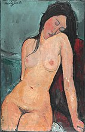
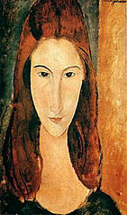
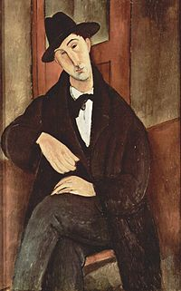

Амеде́о (Иеди́дия) Клеме́нте Модилья́ни (итал. Amedeo Clemente Modigliani [ameˈdɛːo modiʎˈʎaːni]; 12 июля 1884, Ливорно, Королевство Италия — 24 января 1920, Париж, Третья французская республика) — итальянский художник и скульптор, один из самых известных художников начала XX века, представитель экспрессионизма.
Модильяни вырос в Италии, где изучал античное искусство и творчество мастеров эпохи Возрождения, пока в 1906 году не переехал в Париж. В Париже он познакомился с такими художниками, как Пабло Пикассо и Константин Брынкуши, оказавшими большое влияние на его творчество. Модильяни имел слабое здоровье — он часто страдал от заболеваний лёгких и в возрасте 35 лет умер от туберкулёзного менингита. О жизни художника известно лишь из немногих достоверных источников.
Наследие Модильяни составляют главным образом картины и эскизы, однако с 1909 по 1914 годы он занимался в основном скульптурами. Как на полотнах, так и в скульптуре, основным мотивом Модильяни являлся человек. Помимо этого, сохранились несколько пейзажей; натюрморты и картины жанрового характера не интересовали художника. Часто Модильяни обращался к произведениям представителей Ренессанса, а также к популярному в то время африканскому искусству. В то же время творчество Модильяни нельзя отнести ни к одному из современных направлений того времени, как например, кубизм или фовизм. Из-за этого искусствоведы рассматривают творчество Модильяни отдельно от основных течений того времени. При жизни работы Модильяни не имели успеха и стали популярными лишь после смерти художника: на двух аукционах «Сотбис» в 2010 году две картины Модильяни были проданы за 60,6 и 68,9 млн долларов США[3], а в 2015 году «Лежащая обнажённая» была продана на аукционе «Кристис» за 170,4 млн долларов США[4]. В мае 2018 года картина художника «Лежащая обнажённая (на левом боку)» была продана на аукционе «Сотбис» в Нью-Йорке за рекордную (для «Сотбис») цену 157,2 миллиона долларов. Прежний владелец картины приобрёл её на аукционе «Кристис» в 2003 году за 26,9 миллиона долларов.[5]
Амедео Модильяни по праву считается певцом красоты обнажённого женского тела. Он одним из первых начал изображать ню более реалистично в эмоциональном плане. Именно это обстоятельство в своё время привело к молниеносному закрытию его первой персональной выставки в Париже. Обнажённая натура в творчестве Модильяни — это не абстрактные, рафинированные образы, а реальные портретные изображения. Техника и тёплая световая гамма в картинах Модильяни «оживляет» его полотна. Картины Амедео, выполненные в жанре ню, считаются жемчужиной его творческого наследия.
  